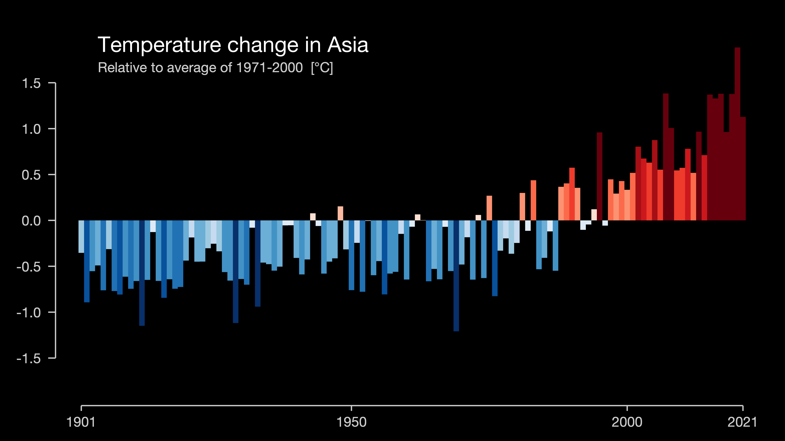

CLIMATE, ASIAN
June 20, 2022
This is a point map, containing all the natural disasters in China from 1966 to 2018. The larger the circle is, the more disaster happened in that province. The color shows the dominant type of disaster taking place in this given province. If you click each circle, you can see the disaster types in detail. If you zoom in, you can see the exact location of each disaster and its year.
This is a point map, containing all the natural disasters in China from 1966 to 2018. The larger the circle is, the more disaster happened in that province. The color shows the dominant type of disaster taking place in this given province. If you click each circle, you can see the disaster types in detail. If you zoom in, you can see the exact location of each disaster and its year.
